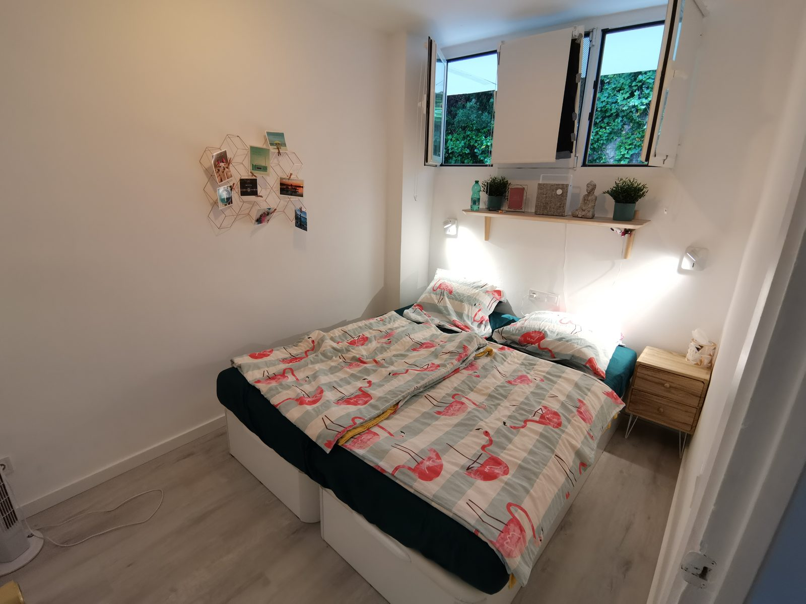
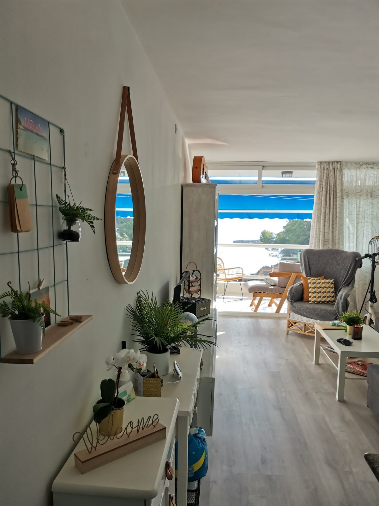
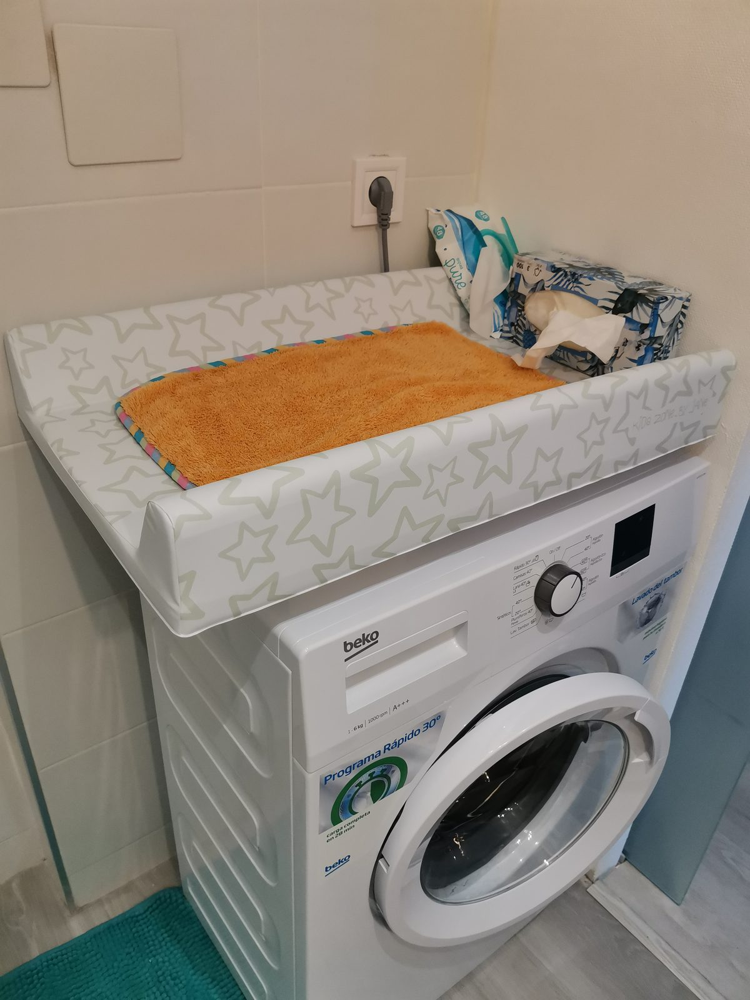

Was alles da ist – und wo es liegt. Alles darf benutzt werden.
Küche
Die offene Küche hat ein Cerankochfeld, einen Kühlschrank mit Gefrierfach, eine Nespresso-Maschine, Toaster, Wasserkocher und eine Spülmaschine. Geschirr, Besteck und Gläser sind reichlich vorhanden.
Ein Trolley für den Einkauf zu Fuß steht ebenfalls in der Wohnung.
Schlafen & Wohnen
Im Schlafzimmer stehen zwei 80-cm-Betten, die sich als Einzel- oder Doppelbett nutzen lassen, dazu ein geräumiger Einbauschrank und ein Nachttisch. Stauraum gibt es zusätzlich in den Bettkästen und im Wohnzimmer.
Im Wohnbereich stehen ein Schlafsofa, ein gemütlicher Sessel, ein Couchtisch, ein ausklappbarer Ess- bzw. Arbeitstisch und eine Glasvitrine mit Gläsern, Büchern und Spielen.


Wäsche
Handtücher, Bettwäsche und Bettzeug, Strandhandtücher und Geschirrtücher sind vorhanden und im Schlafzimmer-, Bad- und Küchenschrank zu finden.
Technik
Für den Sommer gibt es über der Küchentheke einen großen Deckenventilator und zwei weitere Ventilatoren (Schlafzimmer und Wohnzimmer). Für den Winter eine elektrische Heizung – der Dyson kann an kalten Tagen auch heizen. Die Lüftung im Bad (äußerster rechter Schalter neben dem Waschbecken) bitte während und nach dem Duschen laufen lassen.
Die Programme sind recht selbsterklärend, Waschmittel und Weichspüler sind vorhanden. Bitte nie die Wohnung verlassen, wenn die Maschine läuft. Der Ein-Knopf muss oft mehrfach betätigt werden. Die Wasserzufuhr hinter der Maschine so einstellen, dass der Haken nach oben zeigt – dann ist das Wasser an.
Die Programmübersicht hängt in der Tür unter der Spüle. Bitte das Geschirr vorher von Essensresten befreien.
Er steht unter dem TV-Board und hat an der Seite einen Anschalter. Vor der Benutzung alles verstauen, Schuhe und Kabel zur Seite räumen – die frisst er sonst gerne. Und immer mal leeren.
Sie befinden sich unter dem TV in einer der weißen Boxen.
Unterhaltung
Das Antennensignal ist extrem schlecht. Am TV hängt ein Chromecast, der im WLAN ist – damit kann man alles vom Handy auf den Fernseher streamen, wenn das Handy ebenfalls im WLAN ist.
Die Wände sind sehr dünn, also bitte nicht zu hart krachen lassen.
Bücher können gerne vor Ort gelesen und auch mitgenommen werden – einfach ein anderes dalassen. Gesellschaftsspiele stehen im Wohnzimmerschrank bzw. in der Glasvitrine.
Strand & Pool
Strandtücher zum Baden sind vorhanden und können gerne benutzt werden. Zwei Klappliegen liegen im Bettkasten.
Mit Baby / Kleinkind
Für Babys und Kleinkinder haben wir auch einiges da:

Wo es vor Ort was für Babys zu kaufen gibt, steht unter Infos.